I visited Belize with my parents in August 2026, and crossing the border was the first test. I found out the night before that Belize charges Indian citizens who need a visa a $600 fee. Unlike my mother and me, my dad did not have the foresight to be born in the US, so I was very worried. However, since he had a Schengen visa, they let him through without any issues. What followed was one of the trip's richest stretches: an English-speaking sliver of Central America stuffed with Maya ruins, dripping caves, and the second-largest barrier reef on earth.
Belize is unusual from the first sign you read, because it is the only country in Central America where the official language is English, a legacy of British rather than Spanish rule. We passed through Belize City, the nation’s largest city and former capital. This low-lying town on the coast feels far smaller than its status suggests. It sits so exposed to the sea that after Hurricane Hattie’s devastation in 1961 the government moved the capital inland to the even smaller town of Belmopan. Its little museum houses a sobering exhibit on the country's history of slavery. We spent most of our time further west in San Ignacio, a laid-back hill town in the Cayo district near the Guatemalan border, and the perfect launchpad to explore the ruins and caves of the interior.
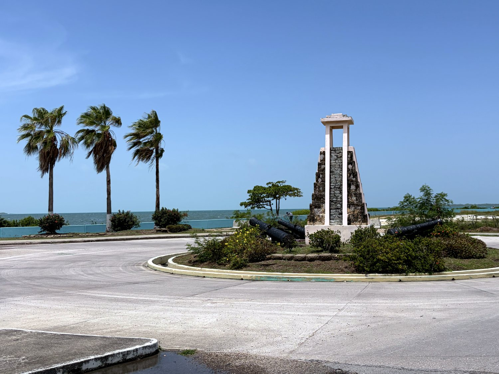
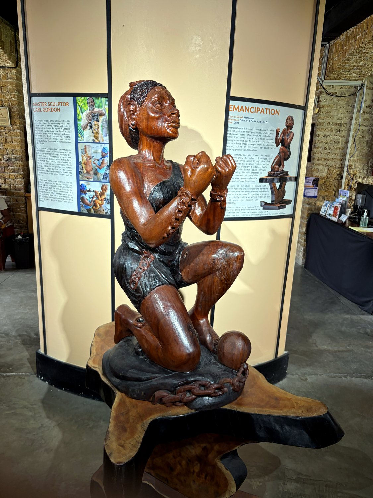
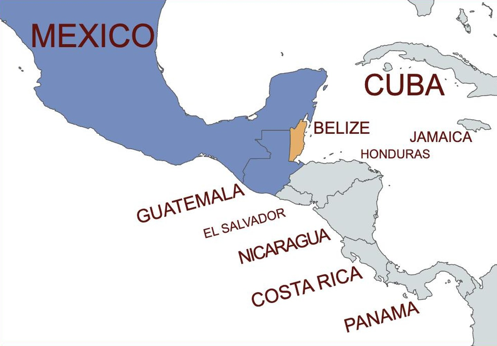
Belize sits in the old Maya heartland, and at its height, more than a thousand years ago, this territory supported a population far larger than it holds today. After the Maya world declined, the region drew a very different sort of settler. From the 1600s, British buccaneers and loggers, known as the Baymen, established themselves along the coast to harvest timber and mahogany, prized in Europe for dye and furniture. That trade was worked by enslaved Africans, and the resulting society became something distinct in the region: Creole-speaking, Protestant, and oriented toward the British Caribbean rather than Hispanic Central America.
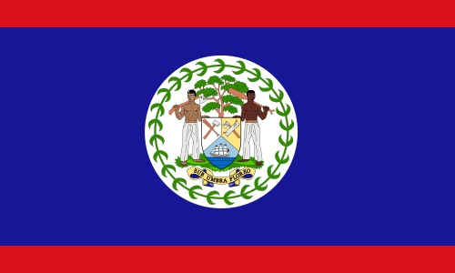
The Baymen fended off Spanish attempts to dislodge them, most famously at the Battle of St. George's Caye in 1798, and the territory eventually became the crown colony of British Honduras. It was the last British colony on the American mainland, achieving independence only in 1981. Even now the country lives with an asterisk: neighbouring Guatemala has long claimed Belizean territory, a dispute still working its way through international courts. Modern Belize is proudly multicultural, blending Creole, Garífuna, Maya, and Mestizo communities. Its flag is one of the few in the world to feature human figures, one Mestizo and one Creole. These two woodcutters flank a mahogany tree, beneath the fitting motto "Sub Umbra Floreo," or "Under the shade I flourish."
The undisputed highlight of Belize, and one of the most extraordinary places I have ever explore, is Actun Tunichil Muknal, universally known as the ATM Cave. Reaching it means a jungle trek and fording three rivers, and entering it means swimming into a pitch-black mouth in the rock. For much of the journey you wade up an underground river, headlamp swallowed by the dark, past cathedral-like rock formations. Then you climb into a dry upper chamber that the Maya used for sacrificial rituals. The floor is scattered with ancient pottery and the calcified skeletons of sacrificial victims, including the famous "Crystal Maiden." The Maya, it is thought, made these desperate offerings to their gods as drought tightened its grip, and the effect of standing among them by lamplight is unforgettable and genuinely haunting. I must confess that I did not take these photos myself. Since a tourist dexterously dropped his phone onto a skull and shattered it, phones and cameras are banned in the cave. Fortunately, my guide exuded benevolence and sent me photos he had taken a while back.
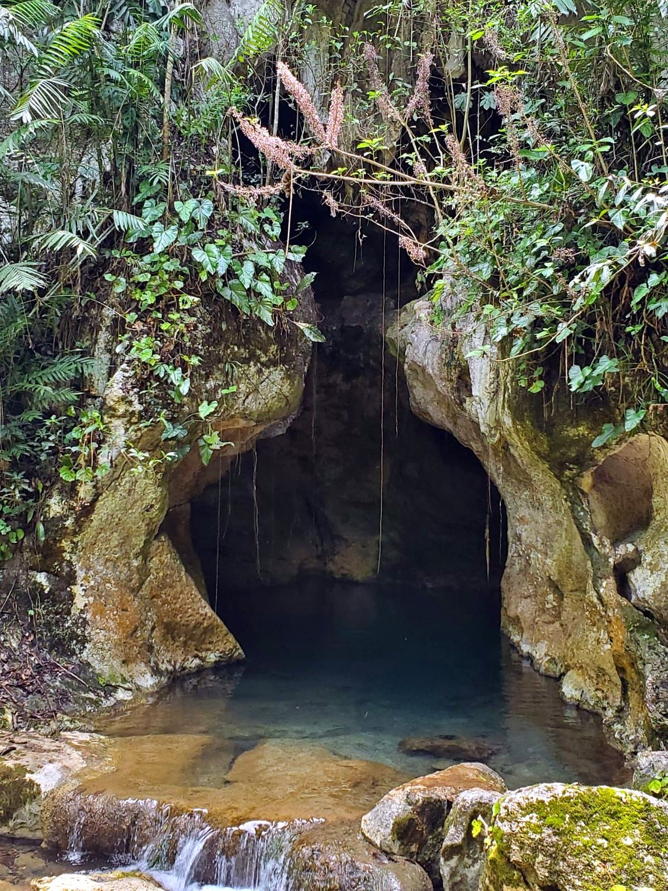
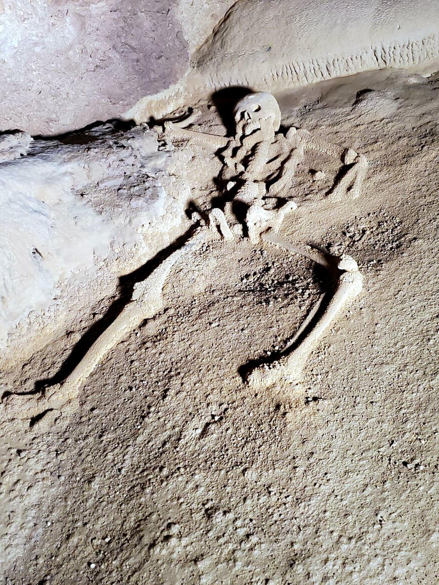
Deep in the jungle near the Guatemalan border lies Caracol, the largest Maya site in Belize and once one of the great powers of the Maya world. Its centrepiece is Caana, the "Sky Palace," a colossal pyramid complex that even today remains the tallest man-made structure in the entire country. We arrived just as it opened and had the ruins almost to ourselves, which is the ideal way to experience them. In its prime around 650 AD, Caracol was a superpower, and in 562 AD it famously defeated its mighty rival Tikal, just across the modern border. Climbing to the top of Caana and looking out over an unbroken sea of rainforest, with monkeys crashing through the branches nearby, it is easy to feel the weight of that vanished ambition.
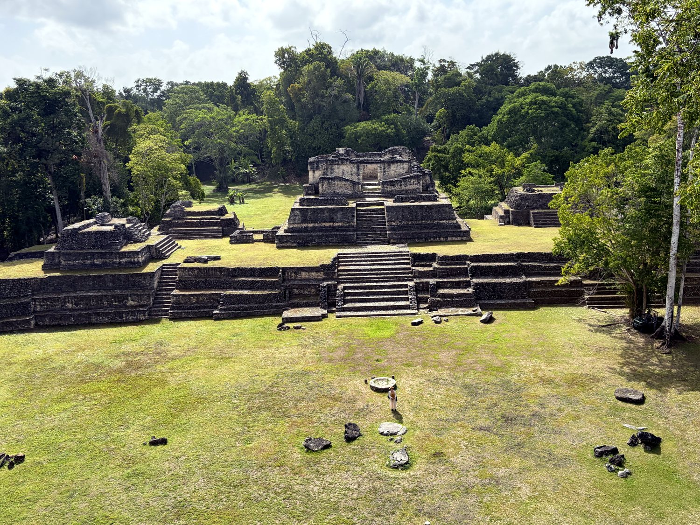
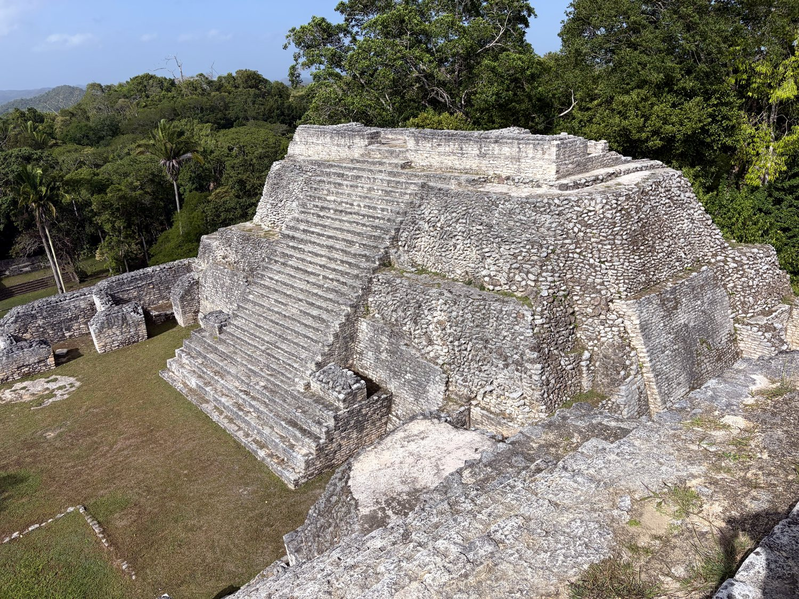
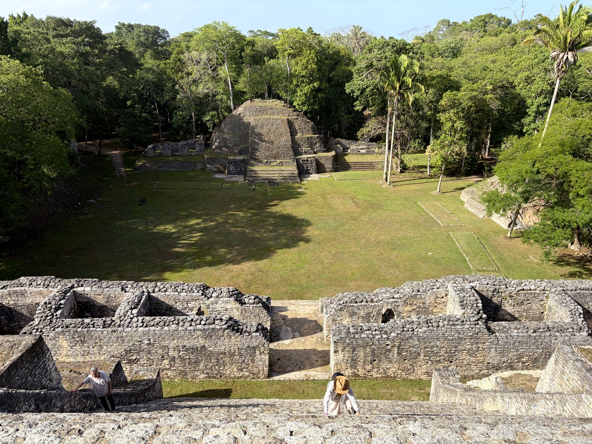
For a gentler dose of history, Cahal Pech sits on a hilltop right above San Ignacio. Its name means "Place of Ticks," an unglamorous label for what is actually one of the oldest known Maya sites in the region, with roots reaching back over three thousand years to the very dawn of Maya civilization. It was once the hilltop home of an elite ruling family. We had the compact, leafy complex almost entirely to ourselves, wandering its plazas and climbing its modest temples in near-total quiet. The moment I remember best had nothing to do with archaeology: a butterfly settled on my hand and stayed there, in no hurry to leave, as if it too were enjoying having the ruins to itself.
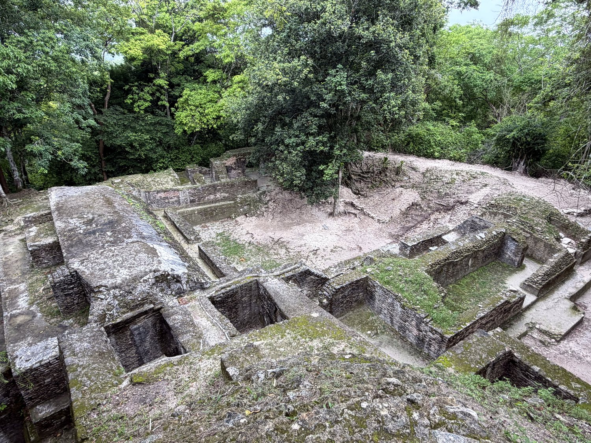
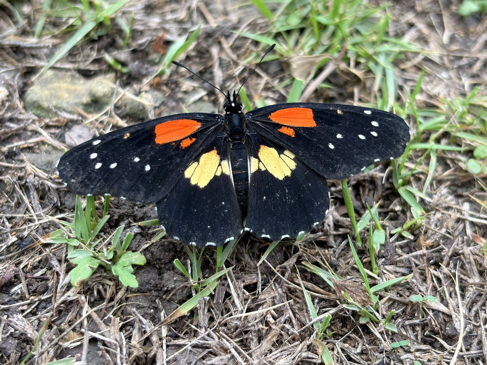